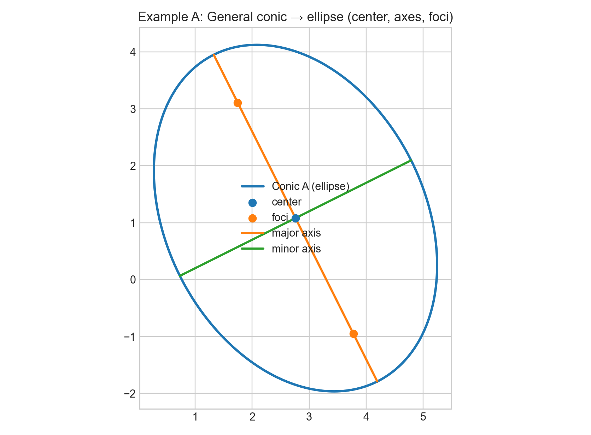
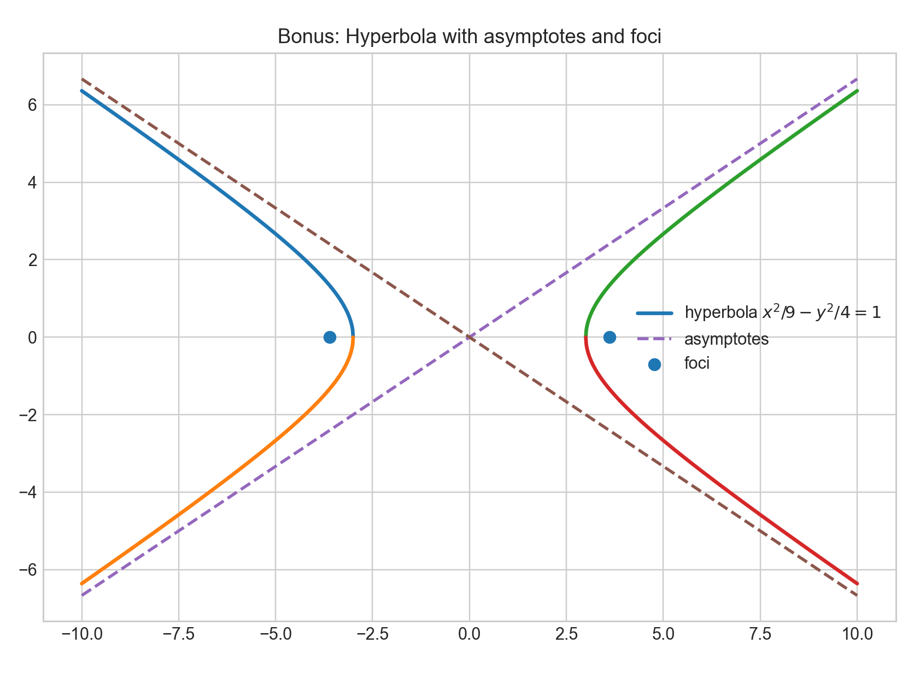

下面把圆锥曲线（椭圆/双曲线/抛物线）里“守恒式（更准确叫：在平移/旋转等坐标变换下不变的量、以及由定义带来的不变量）”和常用/冷门数学关系式做一个“可查表式”的总结，并给出解析几何算例与 Python 画图代码（可直接运行）。
1) 最常用的“守恒式 / 不变量”（解析几何最爱用的那批）
1.1 二次曲线一般式与矩阵形式（通用入口）
一般二次曲线： $$ Ax^2+Bxy+Cy^2+Dx+Ey+F=0 $$ 矩阵写法（便于“守恒量”一眼看出）： $$ \mathbf{x}^TQ\mathbf{x}+ \mathbf{p}^T\mathbf{x}+F=0,\quad Q=\begin{pmatrix}A&\frac{B}{2}\\ \frac{B}{2}&C\end{pmatrix}, \mathbf{p}=\begin{pmatrix}D\\E\end{pmatrix} $$
1.2 分类判别式（旋转不变：最常用）
$$ \Delta_2 = B^2-4AC $$
- \(\Delta_2<0\)：椭圆型（可能是椭圆、圆、点、虚椭圆）
- \(\Delta_2=0\)：抛物线型（可能退化成平行线/重线）
- \(\Delta_2>0\)：双曲线型（可能退化成两相交直线）
这是最常被称作“守恒”的：无论你怎么旋转坐标轴，\(B^2-4AC\) 不变（本质是 \(Q\) 的特征值符号结构不变）。
1.3 消去交叉项的旋转角（常用）
当 \(B\neq 0\)，旋转角 \(\theta\) 满足 $$ \tan 2\theta=\frac{B}{A-C} $$ 旋转后 (xy) 项消失。
1.4 二次型的特征值（更“本质”的不变量）
\(Q\) 的特征值 \(\lambda_1,\lambda_2\)（以及它们的符号）在正交变换下不变。
- \(\text{tr}(Q)=A+C=\lambda_1+\lambda_2\)
- \(\det(Q)=AC-\frac{B^2}{4}=\lambda_1\lambda_2\)
1.5 中心存在性（常用但容易忘）
二次曲线有“中心”（椭圆/双曲线及其退化）当且仅当线性方程组有解： $$ \begin{pmatrix}2A&B\\B&2C\end{pmatrix}\begin{pmatrix}x_0\\y_0\end{pmatrix}= -\begin{pmatrix}D\\E\end{pmatrix} $$ 抛物线一般没有中心。
2) 三大圆锥曲线的“定义型守恒式”（距离和/差、离心率）
2.1 离心率统一定义（超级常用）
焦点—准线定义： $$ \frac{\text{点到焦点距离}}{\text{点到准线距离}}=e $$
- 椭圆：\(0<e<1\)
- 抛物线：\(e=1\)
- 双曲线：\(e>1\)
2.2 椭圆（最常用关系式）
标准式（主轴沿 x）： $$ \frac{x^2}{a^2}+\frac{y^2}{b^2}=1,\quad a\ge b>0 $$ 参数式（常用）： $$ x=a\cos t,\quad y=b\sin t,\quad 0\le t<2\pi $$ 焦距参数： $$ c^2=a^2-b^2,\quad e=\frac ca $$ 距离和守恒（定义）：对任一点 \(P\)， $$ PF_1+PF_2=2a $$ 准线： $$ x=\pm\frac{a}{e}=\pm\frac{a^2}{c} $$ 半通径（latus rectum）： $$ \ell=\frac{b^2}{a} $$ 面积（常用）： $$ S=\pi ab $$
祖暅原理（Cavalieri）推导思路（点击展开）
把椭圆域 $$ E:\ \frac{x^2}{a^2}+\frac{y^2}{b^2}\le 1 $$ 与单位圆盘 $$ D:\ x^2+y^2\le 1 $$ 作比较。令 \(y=bt\)（\(t\in[-1,1]\)），则椭圆在高度 \(y\) 处的水平截线长度为 $$ L_E\(y\)=2a\sqrt{1-\frac{y^2}{b^2}}=2a\sqrt{1-t^2} $$ 而单位圆盘在高度 \(t\) 处的截线长度为 $$ L_D\(t\)=2\sqrt{1-t^2} $$ 于是对应“每一层截线长度成固定比例 \(a\)”且“高度参数再按 \(b\) 缩放”，面积按 (ab) 成比例： $$ S\(E\)=ab\,S\(D\)=ab\cdot\pi=\pi ab $$
切线（点 \((x_0,y_0)\) 在椭圆上）： $$ \frac{xx_0}{a^2}+\frac{yy_0}{b^2}=1 $$
2.3 双曲线（最常用关系式）
标准式： $$ \frac{x^2}{a^2}-\frac{y^2}{b^2}=1 $$ 参数式（常用）： $$ x=a\sec t,\quad y=b\tan t,\quad |t|<\frac{\pi}{2} $$ 或（双曲函数参数）： $$ x=a\cosh u,\quad y=b\sinh u,\quad u\in\mathbb{R} $$ $$ c^2=a^2+b^2,\quad e=\frac ca>1 $$ 距离差守恒（定义）： $$ |PF_1-PF_2|=2a $$ 渐近线： $$ y=\pm\frac ba x $$ 准线： $$ x=\pm\frac{a}{e}=\pm\frac{a^2}{c} $$ 半通径： $$ \ell=\frac{b^2}{a} $$ 切线（点 \((x_0,y_0)\) 在双曲线上）： $$ \frac{xx_0}{a^2}-\frac{yy_0}{b^2}=1 $$
2.4 抛物线（最常用关系式）
标准式： $$ y^2=4px\quad \(p>0\) $$ 焦点、准线： $$ F\(p,0\),\quad x=-p $$ 焦弦（过焦点的弦）长度常用结论：
- 通径（latus rectum）长：\(4p\) 参数式（常用）： $$ x=pt^2,\quad y=2pt $$ 切线（参数 \(t_0\)）： $$ ty = x + pt^2\quad\text{在 }t=t_0\text{ 处 } \Rightarrow\ t_0y=x+pt_0^2 $$
3) 一些“冷门但很好用/很漂亮”的关系式（挑常见冷门）
3.1 共轭直径/共轭弦（椭圆/双曲线）
对椭圆参数点 \(P(a\cos t, b\sin t)\)，其切线方向与“共轭直径”有经典对应（工程/几何优化里挺常用）。
3.2 反射性质（焦点反射）
- 椭圆：从一个焦点出发反射到另一焦点（入射角=反射角）
- 抛物线：来自焦点的光线反射后平行于轴（以及反过来）
- 双曲线：来自一个焦点反射后好像来自另一个焦点（“虚像”性质）
3.3 Director circle（导圆，较冷门）
- 椭圆 \(\frac{x^2}{a^2}+\frac{y^2}{b^2}=1\)：导圆 \(x^2+y^2=a^2+b^2\)
- 双曲线 \(\frac{x^2}{a^2}-\frac{y^2}{b^2}=1\)：导圆 \(x^2+y^2=a^2-b^2\)（若 \(a>b\) 才为实圆）
导圆：满足“从该圆上点引曲线切线互相垂直”等等等价性质（竞赛/解析几何题偶尔出现）。
3.4 极线/极点（更偏射影几何，但解析几何也能算）
对二次曲线 \(X^TAX=0\)，点 \(P\) 的极线可用 \(P^TA X=0\) 表达（坐标齐次形式）。对求切线、判定共线很强。
4) 解析几何算例（带完整步骤思路）
算例 A：把一般二次曲线化到标准形并提取几何量
给： $$ 9x^2+4xy+6y^2-54x-24y+36=0 $$ \(1\) 分类： \(\Delta_2=B^2-4AC=4^2-4\cdot 9\cdot 6=16-216=-200<0\) 所以是椭圆型（或退化椭圆）。
\(2\) 旋转去掉 (xy)： $$ \tan 2\theta=\frac{B}{A-C}=\frac{4}{9-6}=\frac{4}{3} $$ 取 \(\theta\) 满足即可（Python 里可直接算数值）。
\(3\) 平移到中心： 解 $$ \begin{pmatrix}18&4\\4&12\end{pmatrix}\begin{pmatrix}x_0\\y_0\end{pmatrix}= \begin{pmatrix}54\\24\end{pmatrix} $$ 得到中心 \((x_0,y_0)\)（Python 一行线代就能解）。
\(4\) 得到标准式参数 (a,b) 与主轴方向： 用特征值分解得到旋转后的二次项系数，再结合常数项得到 \(a^2,b^2\)。 下面 Python 会把这些全部算出来并画图（含中心/主轴）。
算例 B：抛物线切线、焦点、准线与“守恒式”验证
取 \(y^2=8x\)，即 \(4p=8\Rightarrow p=2\)。
- 焦点：\(F(2,0)\)
- 准线：\(x=-2\)
- 任一点 (P(x,y)) 在抛物线上满足 $$ PF=\text{到准线距离} \quad\(\text{离心率 }e=1\) $$ 再取参数点 \(t=1\)：\(P(pt^2,2pt)=(2,4)\)。 可直接数值验证 (PF) 与 \(x\) 到 \(-2\) 的距离相等。 切线：\(t y = x + pt^2\Rightarrow 1\cdot y=x+2\)。
5) Python 画图与自动化提取参数（可直接运行）
下面代码会做三件事：
- 对算例 A 自动：分类、求中心、求旋转角、化标准式参数，并画出椭圆
- 对算例 B 画抛物线、焦点、准线、某点切线，并验证 \(PF=\)到准线距离
- 顺带画一个标准双曲线示例（带渐近线、焦点）
代码（点击展开）
import numpy as np
import matplotlib.pyplot as plt
# -----------------------------
# Helper: classify conic by invariants
# -----------------------------
def classify_conic(A,B,C,D,E,F):
disc = B*B - 4*A*C
if disc < 0:
kind = "ellipse-type (disc<0)"
elif disc == 0:
kind = "parabola-type (disc=0)"
else:
kind = "hyperbola-type (disc>0)"
return disc, kind
# -----------------------------
# Example A: 9x^2 + 4xy + 6y^2 -54x -24y +36 = 0
# Use matrix form x^T Q x + p^T x + F = 0
# -----------------------------
A,B,C,D,E,F0 = 9,4,6,-54,-24,36
disc, kind = classify_conic(A,B,C,D,E,F0)
print("Example A discriminant B^2-4AC =", disc, "=>", kind)
Q = np.array([[A, B/2],
[B/2, C]], dtype=float)
p = np.array([D, E], dtype=float)
# Center exists if [2A B; B 2C] is invertible and solution exists
M = np.array([[2*A, B],
[B, 2*C]], dtype=float)
center = np.linalg.solve(M, -p)
x0, y0 = center
print("Example A center (x0,y0) =", center)
# Rotate to diagonalize Q: eigen-decomposition gives principal axes
eigvals, eigvecs = np.linalg.eigh(Q) # Q = V diag(lam) V^T
# In rotated coords u = V^T (x - center)
lam1, lam2 = eigvals
V = eigvecs
# Compute constant after completing square: (x-center)^T Q (x-center) = -F'
# Original: x^T Q x + p^T x + F0 = 0
# At center, gradient zero, so value at center gives F'
F_at_center = (center @ Q @ center) + (p @ center) + F0
# In shifted coords z = x-center, equation: z^T Q z + F_at_center = 0
# Rotate: u^T diag(lam) u + F_at_center = 0
print("Example A value at center (should be <=0 for real ellipse):", F_at_center)
# For ellipse: lam1 u1^2 + lam2 u2^2 = -F_at_center
rhs = -F_at_center
a2 = rhs/lam1
b2 = rhs/lam2
# a is sqrt(max), b is sqrt(min) in geometric sense:
a = np.sqrt(max(a2,b2))
b = np.sqrt(min(a2,b2))
print("Example A semi-axes (a,b) =", (a,b))
# Generate ellipse points in principal coordinates, then map back
t = np.linspace(0, 2*np.pi, 500)
u1 = np.sqrt(a2)*np.cos(t)
u2 = np.sqrt(b2)*np.sin(t)
U = np.vstack([u1, u2]) # 2xN
X = (V @ U).T + center # Nx2 in original coordinates
# Plot Example A
plt.figure()
plt.plot(X[:,0], X[:,1], label="Conic A (ellipse)")
plt.scatter([x0],[y0], s=40, label="center")
# Plot principal axes directions
# axes directions are columns of V, scale by semi-axes
axis1 = center + V[:,0]*np.sqrt(a2)
axis2 = center + V[:,1]*np.sqrt(b2)
plt.plot([center[0], axis1[0]], [center[1], axis1[1]], linewidth=2, label="principal axis 1")
plt.plot([center[0], axis2[0]], [center[1], axis2[1]], linewidth=2, label="principal axis 2")
plt.gca().set_aspect("equal", adjustable="box")
plt.title("Example A: general conic -> ellipse (center + principal axes)")
plt.grid(True)
plt.legend()
# -----------------------------
# Example B: Parabola y^2 = 8x => p=2
# -----------------------------
p_par = 2
# param t
tt = np.linspace(-4,4,400)
x_par = p_par*tt**2
y_par = 2*p_par*tt
# choose point at t0=1
t0 = 1
P = np.array([p_par*t0**2, 2*p_par*t0]) # (2,4)
F_focus = np.array([p_par, 0.0]) # (2,0)
# directrix x=-p
directrix_x = -p_par
# verify PF = distance to directrix
PF = np.linalg.norm(P - F_focus)
dist_directrix = abs(P[0] - directrix_x)
print("\nExample B check e=1 property at P:", P)
print("PF =", PF, " distance to directrix =", dist_directrix)
# tangent line at t0: t0*y = x + p*t0^2
# => y = (x + p*t0^2)/t0
# here t0=1: y = x + 2
x_line = np.linspace(-3, 10, 200)
y_tan = (x_line + p_par*(t0**2))/t0
plt.figure()
plt.plot(x_par, y_par, label="parabola y^2=8x")
plt.scatter([F_focus[0]],[F_focus[1]], s=40, label="focus (2,0)")
plt.axvline(directrix_x, linestyle="--", label="directrix x=-2")
plt.scatter([P[0]],[P[1]], s=40, label="P at t=1 (2,4)")
plt.plot(x_line, y_tan, label="tangent at P: y=x+2")
plt.gca().set_aspect("equal", adjustable="box")
plt.title("Example B: parabola with focus/directrix/tangent")
plt.grid(True)
plt.legend()
# -----------------------------
# Bonus: standard hyperbola x^2/a^2 - y^2/b^2 = 1
# -----------------------------
a_h, b_h = 3, 2
x = np.linspace(-10, -a_h, 400)
y = b_h*np.sqrt(x**2/a_h**2 - 1)
x2 = np.linspace(a_h, 10, 400)
y2 = b_h*np.sqrt(x2**2/a_h**2 - 1)
# asymptotes y = ±(b/a)x
x_as = np.linspace(-10, 10, 2)
y_as = (b_h/a_h)*x_as
plt.figure()
plt.plot(x, y, label="hyperbola branch")
plt.plot(x, -y)
plt.plot(x2, y2)
plt.plot(x2, -y2)
plt.plot(x_as, y_as, linestyle="--", label="asymptote")
plt.plot(x_as, -y_as, linestyle="--")
# foci
c_h = np.sqrt(a_h**2 + b_h**2)
plt.scatter([c_h, -c_h], [0,0], s=40, label="foci")
plt.gca().set_aspect("equal", adjustable="box")
plt.title("Bonus: hyperbola with asymptotes and foci")
plt.grid(True)
plt.legend()
plt.show()
如果你希望我再补一份“更冷门但可用于解题的公式清单”（比如：极线极点的坐标算法、圆锥曲线的弦中点公式、过定点弦族的参数化、二次曲线的仿射不变量、圆锥曲线与直线交点的判别式与韦达关系、以及一批竞赛常见结论），我也可以按“公式 → 适用场景 → 一行例题”的格式继续整理。 需要。
6) 自动计算结果与互动图示（由脚本生成）
6.1 算例 A：一般二次曲线 → 标准椭圆（数值提取）
- 判别式：\(\Delta_2 = -200\) → ellipse-type (Δ2 < 0)
- 中心：\((x_0,y_0)=(2.76,1.08)\)
- 去交叉项旋转角：\(\theta \approx 26.565^\circ\)
- 特征值：\(\lambda_1,\lambda_2 \approx (5,10)\)
- 半轴：\(a\approx 3.2087,\ b\approx 2.2689\)，\(c=\sqrt{a^2-b^2}\approx 2.2689\)，离心率 \(e=c/a\approx 0.7071\)
- 焦点（原坐标系）：\(F_1\approx(3.775,-0.949)\)，\(F_2\approx(1.745,3.109)\)
静态图（备份）
6.2 算例 B：抛物线焦点-准线性质与切线验证
- \(\,y^2=8x \Rightarrow p=2\)，焦点 \(F=(2,0)\)，准线 \(x=-2\)
- 取参数点 \(t=1\)：\(P=(2,4)\)
- 数值验证：\(PF\approx 4\)，点到准线距离 \(\approx 4\)
- 切线：(y = x + 2)
静态图（备份）

6.3 Bonus：标准双曲线 + 渐近线 + 焦点
- \(\frac{x^2}{a^2}-\frac{y^2}{b^2}=1\)，取 \(a=3,\,b=2\)
- \(c=\sqrt{a^2+b^2}\approx 3.6056\)，离心率 \(e=c/a\approx 1.2019\)
- 渐近线：\(y=\pm \frac{b}{a}x=\pm 0.6667x\)
静态图（备份）
6.4 Director circle（导圆）互动图
6.5 立体圆锥截线：一个互动图统一椭圆/抛物线/双曲线
6.6 准线—离心率：焦点—准线定义互动验证（统一三类曲线）
验证 \(\frac{\text{点到焦点距离}}{\text{点到准线距离}}=e\)；不同曲线类型对应 \(0<e<1\)、\(e=1\)、\(e>1\)。
6.7 旋转角与 \((A,B,C)\)：消去 \(xy\) 交叉项 + 判别式不变
公式：\(\tan 2\theta = \frac{B}{A-C}\)。拖动 \(A,B,C,\theta\) 观察旋转后 \(B'(\theta)\to 0\)，以及 \(\Delta_2=B^2-4AC\) 的旋转不变性。
6.8 反射性质（焦点反射）：统一互动图（椭圆/抛物线/双曲线）
- 椭圆：从一个焦点出发，反射后到另一个焦点
- 抛物线：从焦点出发，反射后平行于轴（反过来也成立）
- 双曲线：从一个焦点出发，反射后“好像来自”另一个焦点（虚像）
7) 更冷门但可用于解题的公式清单（公式 → 适用场景 → 一行例题）
| 公式 | 适用场景 | 一行例题 |
|---|---|---|
| 极线/极点（齐次）：若二次曲线为 \(X^T A X=0\)，点 \(P\) 的极线：\(P^T A X=0\)。 | 求切线、判共线/共点（射影味但解析也能算） | 已知 \(A\) 与 \(P\)，直接矩阵乘法得到直线系数。 |
| 极线（一般式快速写法）：对 \(Ax^2+Bxy+Cy^2+Dx+Ey+F=0\)，点 \(P(x_1,y_1)\) 的极线可由“代换规则”写出：\(x^2\!\to xx_1,\ y^2\!\to yy_1,\ xy\!\to \frac12(xy_1+x_1y),\ x\!\to \frac12(x+x_1),\ y\!\to \frac12(y+y_1)\)。 | 不想上齐次坐标时的手算捷径 | 把 \(x_1,y_1\) 代入即可得到极线。 |
| 弦中点公式（通用）：对一般二次曲线 \(S=0\)，若 \(M(x_1,y_1)\) 是某条弦的中点，则该弦满足 \(T=S_1\)（\(T\) 为“二次项双线性化 + 一次项取平均”的表达）。 | “给中点求弦方程/方向” 常见套路 | 圆 \(x^2+y^2=r^2\) 退化为 \(xx_1+yy_1=x_1^2+y_1^2\)。 |
| 直线与圆锥曲线交点判别：设直线代入得到二次方程 \(at^2+bt+c=0\)，判别式 \(b^2-4ac\) 决定交点个数；韦达 \(t_1+t_2=-b/a,\ t_1t_2=c/a\)。 | “切线判定/弦长/中点” 的统一入口 | 用韦达直接得到弦中点参数 \(\frac{t_1+t_2}{2}\)。 |
| 仿射不变量（常用口径）：二次项矩阵 \(Q\) 的惯性指数（正/负/零特征值个数）在可逆线性变换下不变；\(\det(Q)=0\) 与否对应“抛物线型 vs 有中心”。 | 判断类型在更一般的线性变换下是否改变 | \(Q\) 非退化且正定 \(\Rightarrow\) 椭圆型（经仿射可化为圆）。 |
| 过定点弦族参数化：固定点 \(P\)，取过 \(P\) 的任意方向直线 \(L(m)\)，与圆锥曲线交于 \(P,Q\)，用代入得到关于参数的二次式，另一根即为 \(Q(m)\)。 | “弦族/二次曲线上的点随斜率变化” | 竞赛常用：把“过定点”变成“一元二次另一根”。 |
8) 极线/极点（Polar line / Pole）展开说明（更偏“可计算”版本）
8.1 为什么它好用：把“切线/共线判定”变成线代
极线/极点本质上是二次曲线的“对偶”结构：你给一个点 \(P\)，它会对应一条直线 \(\ell\)（极线）；反过来你给一条直线 \(\ell\)，也会对应一个点 \(P\)（极点）。在解析几何里它最常用的三个等价用法是：
- 切线是极线的特例：若点 \(P\) 在曲线上，则 \(P\) 的极线就是该点处切线。
- 互伴性（对称性）：\(P\) 在 \(Q\) 的极线上 \(\Leftrightarrow\) \(Q\) 在 \(P\) 的极线上（非常适合判共线/共点）。
- “外点两切线”的弦联络：对外点 \(P\)，从 \(P\) 引曲线两条切线，切点连线（接触弦）就是 \(P\) 的极线。
8.2 齐次坐标的一行公式（推荐记这个）
把平面点写成齐次向量 \(X=(x,y,1)^T\)。一般二次曲线 $$ Ax^2+Bxy+Cy^2+Dx+Ey+F=0 $$ 可以写成矩阵形式 $$ X^T A X = 0,\qquad A=\begin{pmatrix} A & \frac{B}{2} & \frac{D}{2} \\ \frac{B}{2} & C & \frac{E}{2} \\ \frac{D}{2} & \frac{E}{2} & F \end{pmatrix}. $$
给定点 \(P=(x_1,y_1,1)^T\)，它的极线就是 $$ \ell:\ (A P)^T X = 0. $$ 写成通常的直线式就是 \(\ell_1 x+\ell_2 y+\ell_3=0\)（其中 \((\ell_1,\ell_2,\ell_3)^T=A P\)）。
直观理解：\(A\) 提供了一个“二次型内积”。极线就是把这个“内积”对 \(P\) 做一次线性化。
8.3 不想上齐次？用“代换规则”直接写极线（手算友好）
对 \(S(x,y)=Ax^2+Bxy+Cy^2+Dx+Ey+F\)，点 \(P(x_1,y_1)\) 的极线可由下面替换得到（把 \(S\) 里的每一项“线性化”）：
- \(x^2\to xx_1\)，\(y^2\to yy_1\)
- \(xy\to \frac12(xy_1+x_1y)\)
- \(x\to \frac12(x+x_1)\)，\(y\to \frac12(y+y_1)\)
- 常数 \(F\) 保持不变
替换后得到的方程就是极线方程 \(\ell=0\)。
8.4 两个最经典的例子（顺便记极线=切线）
例 1：单位圆 \(x^2+y^2=1\)。点 \(P(x_1,y_1)\) 的极线为 $$ xx_1+yy_1=1. $$ 若 \(P\) 在圆上（即 \(x_1^2+y_1^2=1\)），这条直线正是圆在 \(P\) 处的切线。
例 2：椭圆 \(\frac{x^2}{a^2}+\frac{y^2}{b^2}=1\)。点 \(P(x_1,y_1)\) 的极线为 $$ \frac{xx_1}{a^2}+\frac{yy_1}{b^2}=1. $$ 同样，若 \(P\) 在椭圆上，这就是切线方程（你在解析几何题里经常见到的那条）。
8.5 一个常见技巧：用极线快速处理“外点两切线”
若 \(P\) 是外点，从 \(P\) 作二次曲线两条切线，切点为 \(T_1,T_2\)。那么：
- 接触弦 \(T_1T_2\) 的方程就是 \(P\) 的极线；
- 反过来，如果你先求出 \(P\) 的极线，再和曲线联立求交点，就能直接拿到 \(T_1,T_2\)。
9) 附录：二元一次方程的行列式、以及解析几何里用行列式/“叉积”求面积
9.1 二元一次方程组：行列式判定与 Cramer 法则
考虑 $$ \begin{cases} ax+by=e \\ cx+dy=f \end{cases} $$ 记 $$ \Delta = ad-bc. $$
- 若 \(\Delta\neq 0\)：唯一解 $$ x=\frac{ed-bf}{\Delta},\qquad y=\frac{af-ec}{\Delta}. $$
- 若 \(\Delta=0\)：两条直线“平行或重合”。进一步看
$$
\Delta_x=ed-bf,\qquad \Delta_y=af-ec.
$$
- \(\Delta_x=\Delta_y=0\)：无穷多解（同一条直线）
- 否则：无解（两条平行不同线）
和正文 1.5 的联系：中心方程组的系数矩阵是 \(\begin{pmatrix}2A&B\\B&2C\end{pmatrix}\)，其行列式为 \(4AC-B^2\)。因此 \(4AC-B^2\neq 0\)（等价于 \(\Delta_2=B^2-4AC\neq 0\)）时才有唯一中心；而 \(\Delta_2=0\) 的抛物线型通常没有中心。
9.2 平面面积：2×2 行列式（“叉积”）与鞋带公式
向量 \(u=(u_x,u_y)\), \(v=(v_x,v_y)\) 张成的平行四边形面积： $$ S_{\parallel}=\bigl|u_xv_y-u_yv_x\bigr|. $$ 三角形面积就是它的一半。
三点 \(P_1(x_1,y_1),P_2(x_2,y_2),P_3(x_3,y_3)\) 的三角形面积： $$ S_{\triangle}=\frac12\Bigl|x_1(y_2-y_3)+x_2(y_3-y_1)+x_3(y_1-y_2)\Bigr|. $$
同一个三角形面积也可写成 3×3 行列式（解析几何很常用）： $$ S_{\triangle}=\frac12\left|\det\begin{pmatrix} x_1 & y_1 & 1 \\ x_2 & y_2 & 1 \\ x_3 & y_3 & 1 \end{pmatrix}\right|. $$
多边形（按顶点顺序 \((x_i,y_i)\)）面积（鞋带公式）： $$ S=\frac12\left|\sum_{i=1}^{n}\left(x_i y_{i+1}-y_i x_{i+1}\right)\right|,\quad (x_{n+1},y_{n+1})=(x_1,y_1). $$ 这在解析几何里经常用于“坐标法求面积/判共线（面积为 0）”。